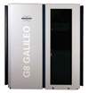
Bruker Galileo G8
High precision quantification of total hydrogen, oxygen and nitrogen in metals. Used on assesment of welding consumables, study of hydrogen transport and diffusivity. Quantifiying oxygen in weldments and study of nitrogen in duplex stainless. This chomatographer is useful to study the viability of a material in a high hydrogen environment concentration. It can be used to study the pipelines repurposing and the life expectancy.
Hardness Mapper - Wilson Tukon 2500 Vickers
Fully automated high precision hardness quantification of a broad spectrum of materials. Used to create hardness maps and study the hardness of carbides inserted on the material matrix. Useful to determine if a material meets the minimum industrial requirements for selling and distribution regarding depth and width.
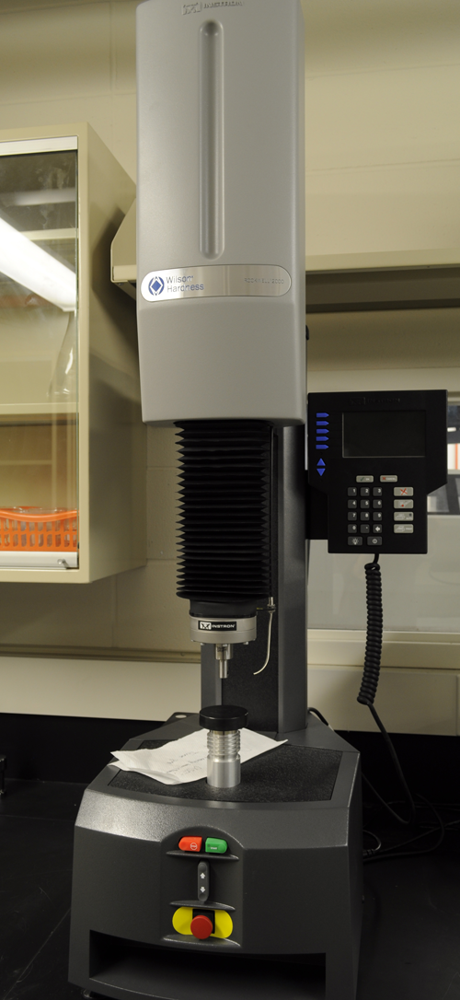
Hardness Tester - Wilson Rockwell 2000
Semi-automated high precision hardness measurement of different shape pieces. Study the effect in hardness of different powder mixtures in the welded surfaces. Characterize hardness pieces allowing the repeatability and reproducibility of the experiments.
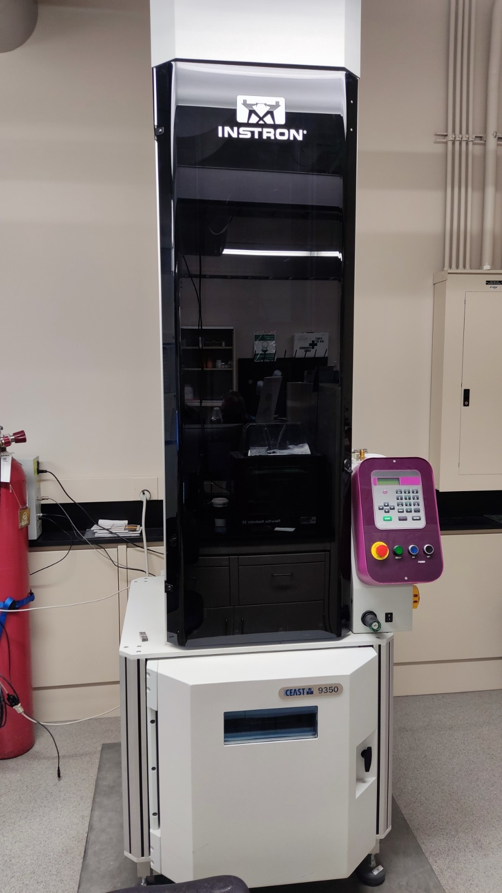
Instron Instrumented Impact Tester CEAST 9350
Used to perform puncture resistance tests, compression after impact tests, tensile impact tests, adhesive peel impact tests, three point bending tests, and component tests. The impact tester provides mechanical properties of materials as input or validation for predictive tools. Used in qualifying welds to meet required codes and standards.
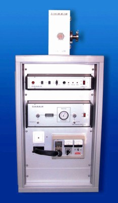
Linseis Dilatometer L78 R.I.T.A.
With a dilatometer it is possible to study the different deformation diagrams of a sample. A key point in welding study is the cooling rates and resulting microstructures process that can be studied with this machine. Knowing cooling rates and final microstructure is used to know the final behaviours of piecces and so it affects the design.
Charpy Broach
Used to create the notch in Charpy V-Notch testing. This equipment is essential to impact testing which provides impact properties of materials, and it is used in industry where impact testing in required.
Charpy Broach Ultra Hard
This broach is used to create the notch in Charpy V-Notch testing for materials with higher hardnesses. This equipment is essential to impact testing which provides impact properties of materials, and is used in industry where impact testing in required.
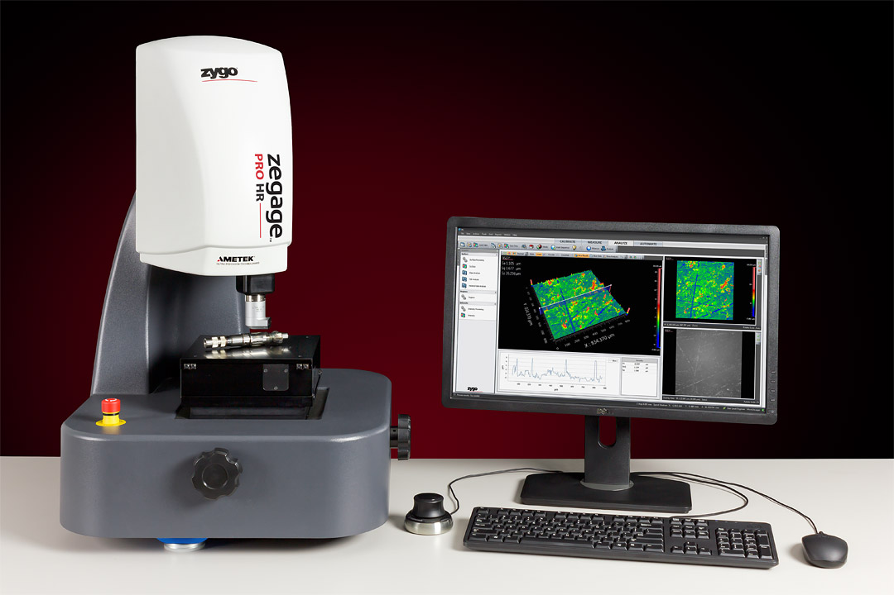
Zygo Zegage Plus Surface Profilometer
Used for very high resolution imaging of matterial surfaces profiles. Provides highly detailed information on post weld surfaces, worn surfaces, and fracture surfaces. Used for quality control and design verification in a variety of surface realted industries including casting, machining, glass shaping, and packaging.
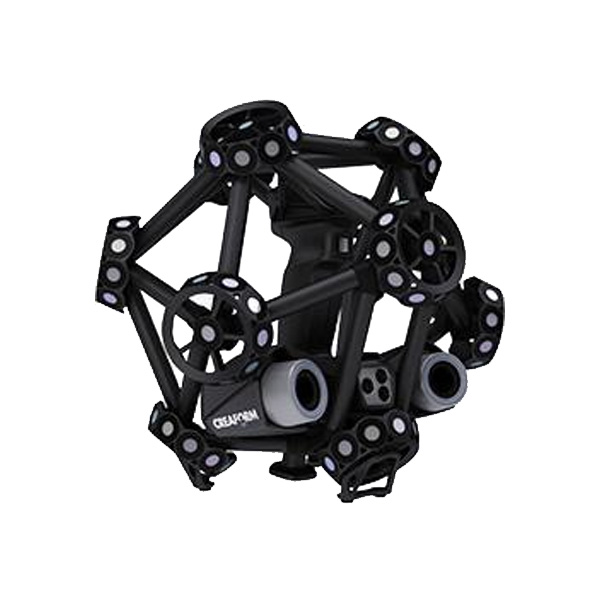
Creaform MetraScan 750 3D Scanner
The MetraScan 750 is a CMM scanner to perform highly accurate and repeatable metrology-grade measurements and 3D geometrical surface inspections. At the CCWJ it is implemented to aid with toolpath generation for zero-programming repair of worn out surfaces using robotic welding. In industry it is comonly used to capture 3D point cloud of objects and metrological inspection in a manufacturing process.
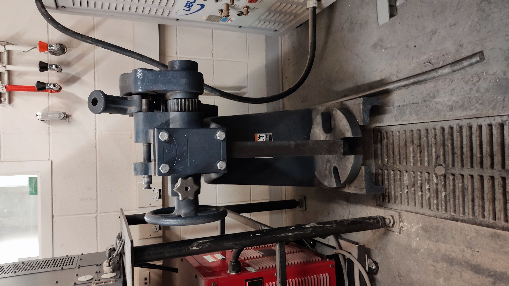
DAKE Arbour Press
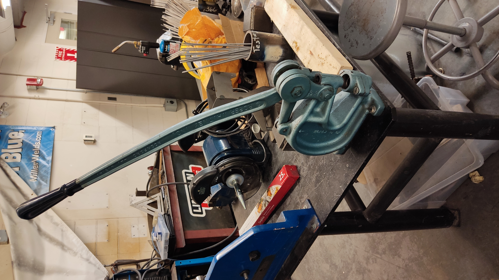
Roper Whitney Sample Punch
Easy-use machine to obtain different shapes samples from 1/16 to 9/16 in. Used to obtain coupons that fit the Galileo G8 crucibles for posterior characterization. Used in industry to punch holes or obtain different samples sizes to fit the required experiments.
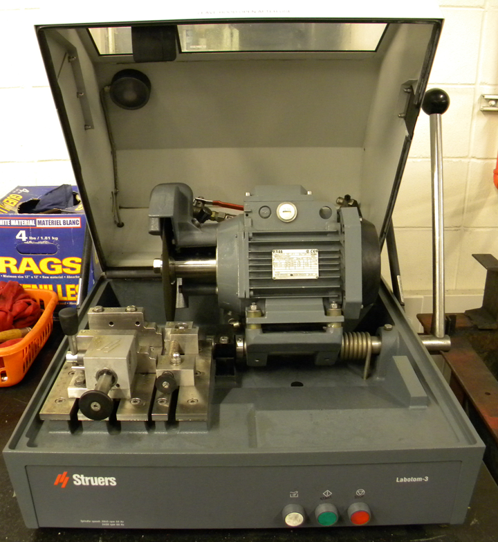
Struers Labotom 3 Wet Saw
This saw is used in cutting a wide range of workpiece shapes, sizes, complexities and materials, to understand weld metallurgy, affected areas around weld and penetration characteristics. In industry, this type of equipment is used in evaluating weld penetration characteristics to meet requirements.
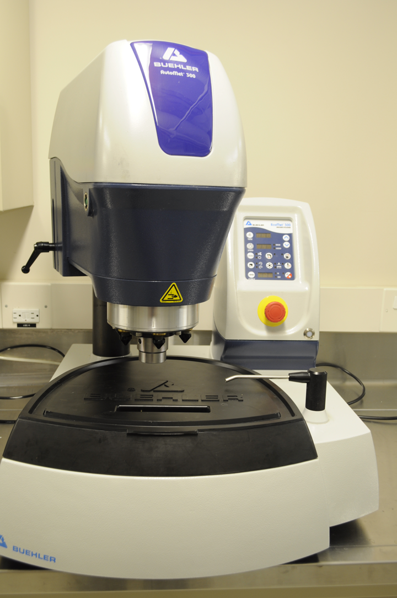
Buehler EcoMet Autopolisher
Semiautomatic machine used for routine grinding and polishing. With this machine it is possible to obtain a perfectly smooth, deformation free surface, which is required to observe the true microstructure. The microstructure observation is necessary for analysis, both qualitative and quantitative, and is usually a quality assurance for industry.
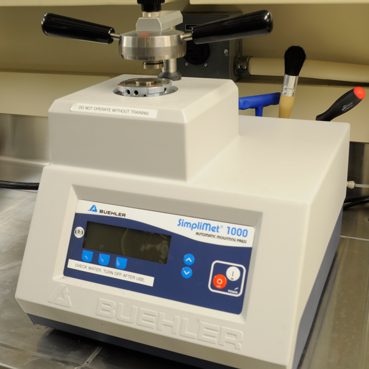
Buehler SimpliMet 1000 Hot Mount
Traditional automatic mounting press machine that uses hot compression system for making mounting metal samples. Used to make mounting metal samples in thermosetting resins, which protects and preserves edges and surface defects during preparation steps and provides excellent sample quality The samples are essential to study the material itself, and from them all the information is obtain through microscope or different kind of tests.
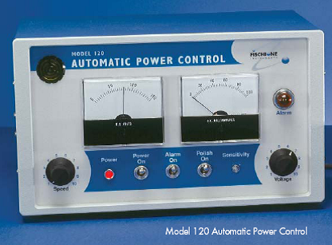
Fischione 110 Electro-Polisher
Electrolytic thinning of conductive materials is an effective method of quickly producing specimens for transmission electron microscopy (TEM) without any induced artifacts. In the Model 110 Twin-Jet Electropolisher, twin jets simultaneously polish both sides of the sample, creating electron transparent specimens within a few minutes. With this equipment it is possible to make phase identification in high strength steels, Characterize nano-precipitates as also the grain and dislocation structure.
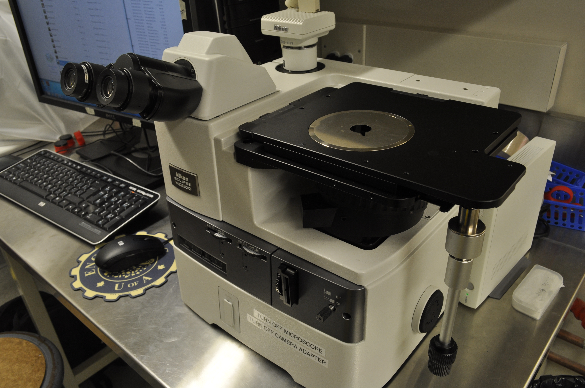
Nikon Eclipse MA200 Inverted Microscope
Used for optical contrast method such as brightfield, and differential interference contrast (DIC) without the need for sample levelling. Study different defects in metal surfaces, it also allows to identify the crystal grain boundaries in metal alloys and metallurgical material inspection in general. An inverted microscope is useful to decide which materials are stable enough for specific purposes and is also use as a form of quality assurance.
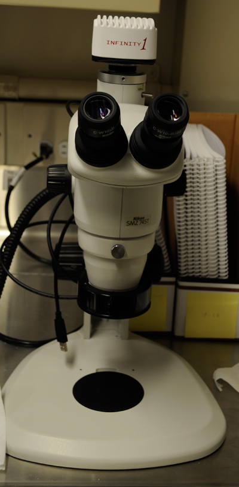
Nikon SMZ 745T Stereomicroscope
Optical microscope designed for low magnification observation of a sample with 7.5x zoom and 115 mm working distance. Used to study the surfaces of solid samples, and observe fracture surfaces and to inspect larger objects such as small mechanical pieces, and minerals. They are essential in the preparation of samples for light microscopy and the two microscopes complement each other.

Presi Mecatome T180 Micro Cutter (Diamond Saw)
Precision manual micro-cutting machine with the ability to section a large range of materials (from the hardest to the softest ones). Used for sectioning medium sized samples from a wide variety of materials obtaining the ideal size of samples to study. The ideal size of sample can easily study with metallographic analysis to obtain the properties and identify possible defects in the material itself.
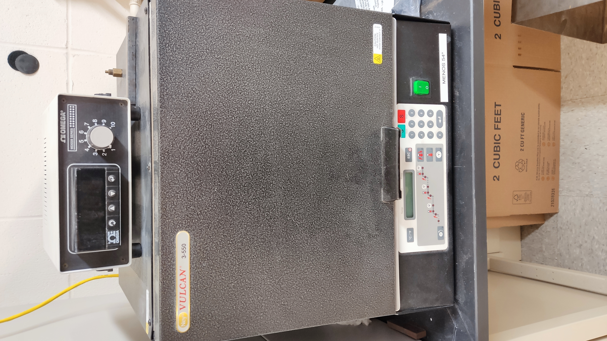
Vulcan 3-550 Furnace
Used to heat up materials until 1100°C to study the behavior of them at different temperatures. It complies with ASTM D36174. Useful to study heating curves and dilation of materials. Small scale furnace to characterize materials under different temperatures regimens
Cavitar Cavilux HF 810nm 500W laser
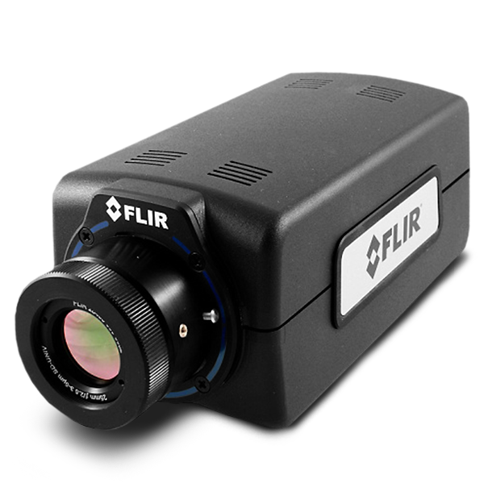
Flir A6751sc Thermal Camera
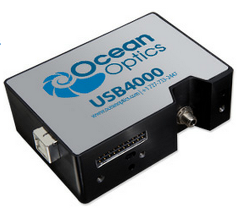
Ocean Optics Spectrometer
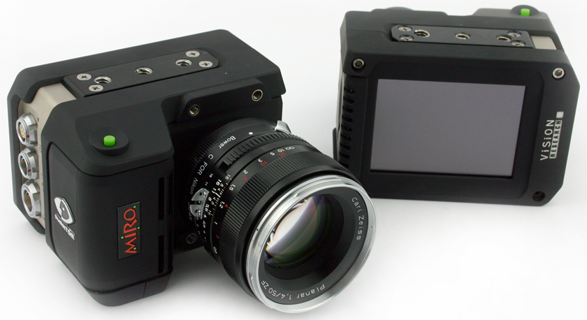
Phantom miro eX4 High Speed Camera (colour)
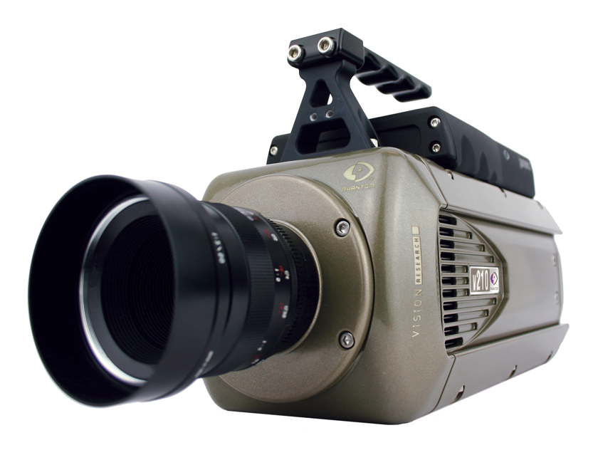
Phantom V 210 High Speed Camera (colour)
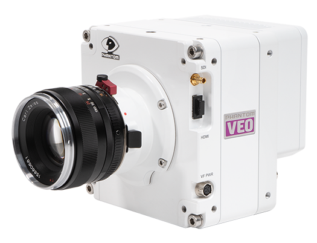
Phantom VEO1310 High Speed Camera (monochrome)
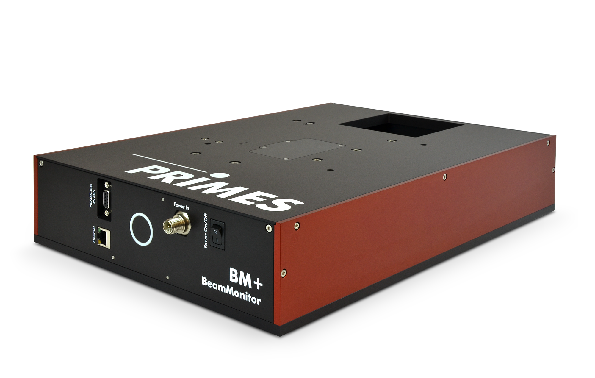
Primes BM+ Beam Profiler
Quick and reliable measurement of laser beam parameters, such as the spacial power density distribution and size of laser spot. Used to quantify the laser beam parameter and input to models for bead characteristics prediction. Used to find optimum working distance for laser and detect laser optics deterioration in high power lasers upto 20KW
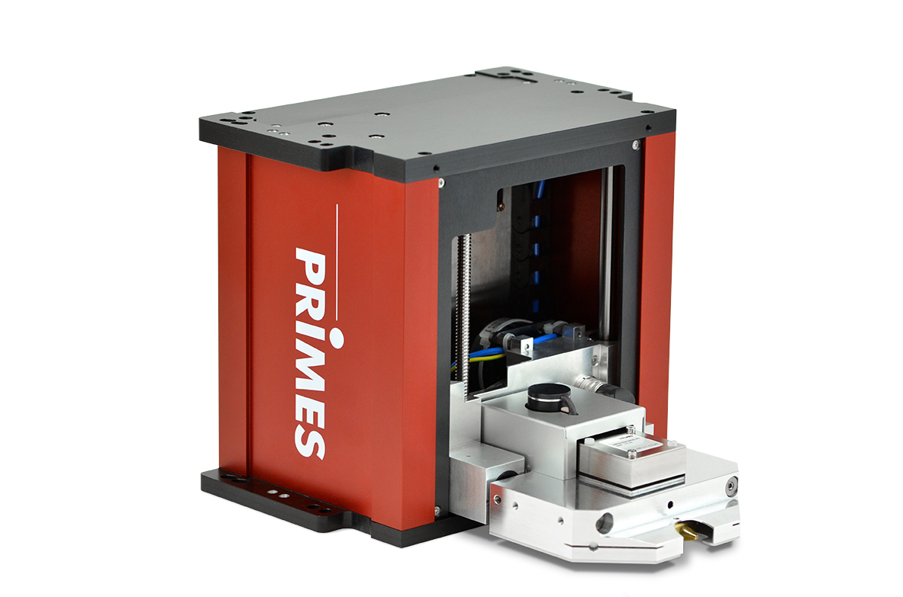
Primes FM+ Beam Profiler
Quick and reliable measurement of laser beam parameters, such as the spacial power density distribution and size of laser spot. Used to quantify the laser beam parameter and input to models for bead characteristics prediction. Used to find optimum working distance for laser and detect laser optics deterioration in high power lasers (ISO 11146).
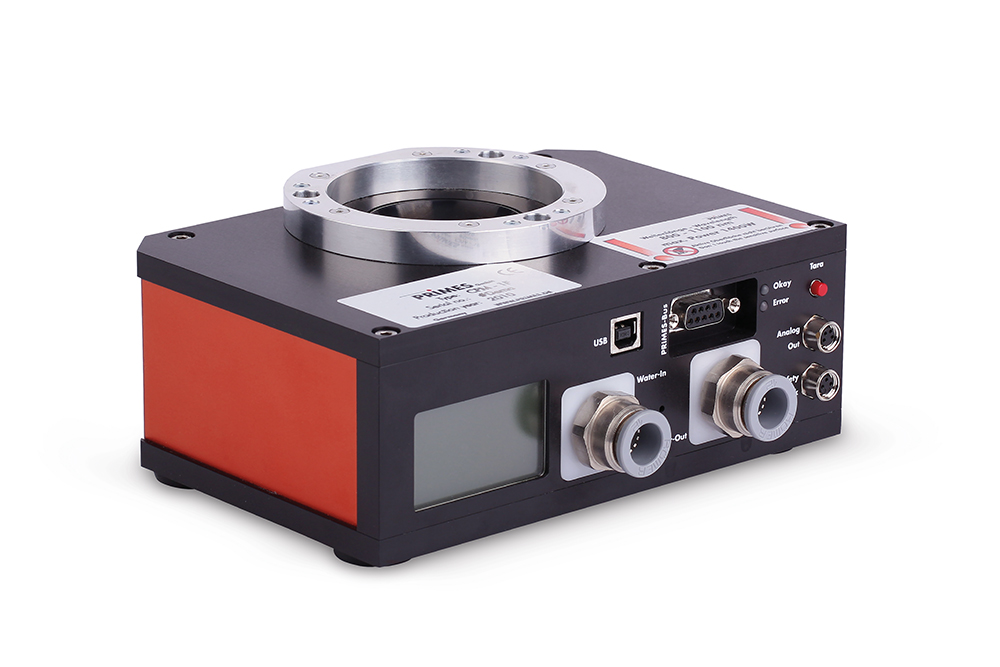
Primes Power Meter CPM-F10
High precision measuring device for industrial laser. Used to quantify effective laser power and loss of laser power through different optics medium. Can detect degradation of diode lasers and laser optics.
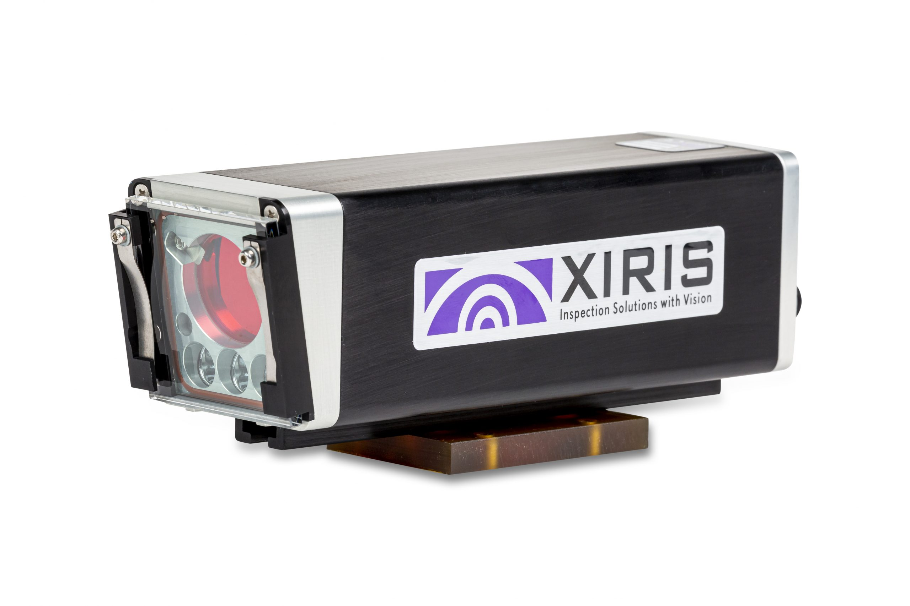
XIRIS XVC-1100 Camera
XIRIS WeldMic
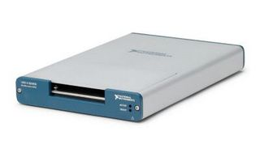
NI DAQ System USB-6351 #1
As a multi-functional I/O device, this allows users to process signal data. With a variety of analog and digital inputs/outputs, it enables users to simplify measurements or even automate aspects of testing. It's multifunctionality makes it useful anywhere advanced signal processing is required.
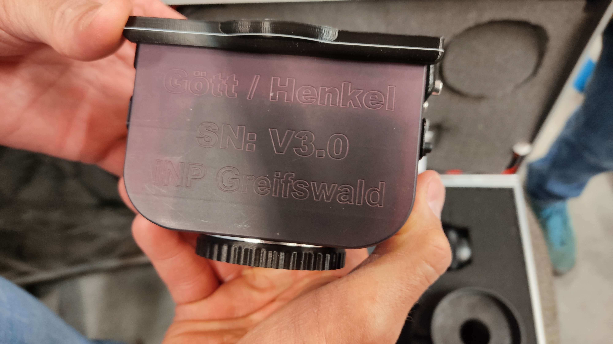
DFO Bifurcation Optics
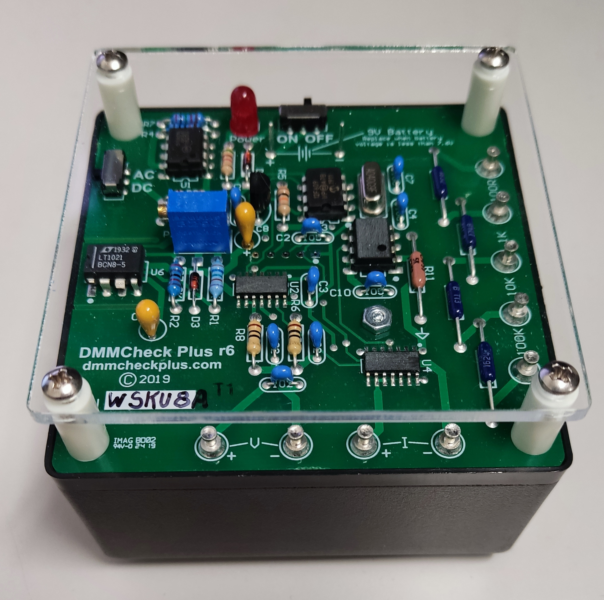